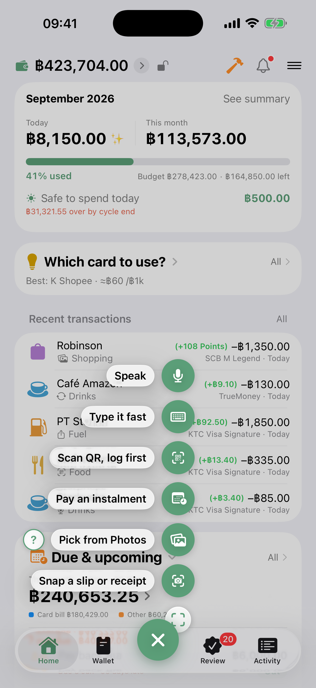

Help
Last updated 20 October 2026 · matches version 2.10.0
Getting started#
- Download DooSpend from the App Store
- Open it — a few onboarding screens show you around
- Add your accounts (cash, bank, credit card) — More → Wallet
- Start logging — tap the "+" in the middle of the tab bar, or a shortcut tile on the Dashboard
Five ways to log an expense#
Tap the "+" in the middle of the tab bar and the shortcut menu opens — by default the five ways below plus Pay recurring and Withdraw cash · pick up to 7 of 20 items yourself (the ✎ at the top of the menu, or Settings → Customize shortcuts). Anything that uses AI always waits in the Review tab for you to confirm before it becomes real money.

1. Snap a slip or receipt#
Opens the camera, one image at a time — a transfer slip, a PromptPay slip, or a shop receipt. The AI reads the amount, the merchant and the date (counts as 1 of your AI quota).
Shortcut: press and hold the "+" button to jump straight to the slip camera.
2. Pick from your photo library#
You can pick several at once — the AI works out what each one is, you don't pick a mode:
- Transfer slip / receipt (one entry per image)
- A Shopee / Lazada / TikTok order, or any screenshot with several lines → split into separate entries (up to 15)
- Anything that isn't financial → skipped automatically. In the app, tap the "?" next to the button to see what it accepts
When you pick several, you see which one it's on. Photos that haven't been downloaded from iCloud yet take a moment each, so the progress bar says "loading 4 of 10" instead of appearing stuck.
If one fails (no connection, or the photo is still in iCloud) you get a Retry for that one only. The ones that already came through don't need picking again, and nothing disappears silently.
3. Scan a QR before you pay#
Scan a shop's QR → the preview shows who gets paid, the amount, and a heads-up to check before you pay. You can also tap Pick from library to scan a QR out of a saved screenshot.
- DooSpend helps you log — it does not pay for you. You still pay in your bank app
- Tap "Log it before paying" → the entry waits in Review → confirm it again once you've actually paid
4. Quick type / 5. Speak#
Type or say something short, like "coffee 75 Starbucks" → the AI separates the amount, the merchant and the category. Speech becomes text on your device (no audio leaves the phone) and only the text is sent.
Put an account name in the text, e.g. "coffee 65 KTC", and the app picks the KTC account · Speaking: when you finish, the app reads it for you, then you check it and save in the same sheet.
Log it ahead of time (so you don't forget)#
An entry in this app means it already happened. Give it a future date and the money leaves your wallet straight away even though you haven't paid — budgets and your "available" figure go wrong with it. So there's a separate path.
When you add an entry and pick a date in the future, the button changes to Log ahead — the entry rests in the Review tab instead of being saved for real.
- Not a single baht is counted yet — account balances, budgets, "available", charts and reports don't move until you confirm
- Before the day, it's silent — no badge, no reminder. Logging tuition two months ahead and being nagged for two months is a reminder you can't act on
- Three days out the row gets a badge and the first reminder. On the day it reminds you again and you can confirm
- You can't confirm early, because confirming moves money immediately. If you really did pay early, use Pay now — date it today, which moves the date first
- Past the date it doesn't vanish — it stays visible until you confirm it or throw it away
- The transactions list has a Logged ahead group at the top with the real date and a countdown, e.g. "04/09/26 · in 2 days" — collapse it if you'd rather not see it
- Edit something on the row and tap "Later" and your edits are kept — open it again and they're still there
Credit cards#
Best Card Selector#
A banner appears while you're filling in an entry — "Use KTC Visa Signature for +฿17.40" — and the shops you log most sit as chips in the Merchant row.
Set up reward rules for each of your cards yourself (category, %, caps, minimum spend — free and unlimited), then tap Which card? to see the best one before you pay.
Free covers one category of your choosing (switchable once a month). Pro covers every category and adds the automatic part: the ✨ chip that tells you which card earns what while you type, and a warning before a reward cap runs out.
Payoff plan (Avalanche / Snowball)#
More → Payoff plan, or the Dashboard tile that appears once two or more cards carry a balance.
- Avalanche — highest interest first, saves the most money
- Snowball — smallest balance first, closes a card sooner, easier to stick with
- Set what you can pay each month → see the timeline for when you're done
Bringing data in from elsewhere#
CSV / Excel (exported from another app, including Excel files saved on Windows) — read entirely on your device, no AI, always free and unlimited. Go to Move from another app → pick the file → map the columns → the rows queue up in Review. If the file has a category you don't have yet, you can create it right there on the mapping screen.
Credit card statement (PDF) → the AI breaks the whole statement into entries in one pass (scanned PDFs and password-protected PDFs are supported) → you choose which ones to import. Use the real PDF from your bank's e-mail if you can — the amounts read far more accurately than a screenshot. The first one is free for everyone; repeat imports are Pro. A file that needs Pro says so in the Review list, and if you upgrade later you can carry on from the same entry — no need to share the file again.
Balance carried over (starting mid-way)#
Just started using the app but the card already has a balance? Enter Carried-over balance when you add or edit the card and it's folded in with what you log from now on, so the outstanding figure matches your real statement from month one.
Card statements — closing date · due date · paying the bill#
Set the closing date and due date on the card's page (tap the "Closes … · Due …" line under the card name) and the app splits your spending into statements like your bank does.
- Spent up to and including the closing date = on that statement · after the closing date = on the next one
- The card's row in Wallet shows the closed statement underneath: "Bill ฿X · due 25 Oct" · paid in part = "฿X left to pay" · past the due date = "N days late" in red · paid in full with new spending = "No unpaid bill · closes …" · overpaid = "Credit"
- The card's page has a "Due this cycle" row with a pay button — it opens the entry sheet with the amount filled in · paying the bill is a transfer from an account to the card, not spending twice (what you bought was counted when you bought it)
- Installments on a card hold the limit, like a bank does — "available" = limit − balance owed − installment principal not yet due · the card page shows the installment amount still held
- Going over the limit: the entry sheet tells you, but still lets you save
- The same statement amount feeds the Due card · the bell · due-date reminders
The card balance doesn't match the bank (interest · fees · penalties)#
When the bank charges interest or a fee to your card, you didn't swipe for it, so the app can't know. To bring the balance back in line:
- Log a new expense on that card for the difference shown on your statement · set the date to when the bank charged it (usually the closing date)
- Tap More → turn on Not counted as spending
Result: the card balance and this cycle's bill match the bank · but it stays out of "spent" and your budgets, since it isn't something you bought · if you'd rather count interest as spending, just leave the switch off
Tip: make an "Interest/fees" category and turn on entries in this category aren't counted as spending for it (see Not counted as spending) — next time, picking that category excludes it for you
Cash advance from a card#
Log it as a transfer from the card to the account that received the money (bank or wallet). It goes into the card's outstanding balance the way it does on the real statement, and lands in the billing cycle that matches the date. It is not counted as spending, because the money is still yours — it only moved. The app does not calculate cash-advance interest (banks charge a different rate than purchases) — when the bank bills you, log that interest as its own entry.
Due-date reminders#
Five local notifications are scheduled automatically (7 days / 3 days / 1 day before, on the day, and 1 day after). Turn them on or off in More → Credit card reminders.
Shared credit limit (primary + supplementary cards)#
For a supplementary card, or any card that shares one limit with a primary card, turn on Shares a limit with another card on the joining card and pick the primary. The app then measures the whole group against the single limit and warns when the combined total is close (≥85%) or full — instead of looking at each card alone, which under-reports.
Pockets — log together, split with friends#
A pocket is a shared ledger for splitting costs with family, friends or a group trip. There are two kinds:
- Personal pocket — groups entries inside your own account so you can see a summary. Stays on your device and your private iCloud
- Shared pocket — invite other people, log together in real time, everyone sees the same set of entries
Create a shared pocket and invite friends#
Creating a shared pocket is a Pro feature. Joining a pocket someone invites you to is always free.
- Pockets tab → "+" → name it, pick an icon and color → turn on Can be shared with others
- Open the pocket → "⋯" menu → Invite a friend → share to LINE, copy the link, or share it any other way. The same menu has How your friend joins with the steps
- Your friend (a different Apple ID) taps the link → it opens in the app and joins automatically. If tapping doesn't work, copy the link → Pockets tab → "+" → Join with a link → paste
If syncing is slow or nothing appears, try switching to mobile data and pull to refresh (some Wi-Fi networks block iCloud syncing). You can only invite people to a pocket that has sharing turned on — a personal pocket can't be shared.
Adding entries to a shared pocket#
- Open the pocket → "+" → enter the amount on the calculator and pick a category
- Choose who paid — if a friend paid, pick their name
- If you paid, you can pick which account it came from, and the full amount you fronted really leaves your personal account — or choose don't deduct to keep the trip separate from your own money
- Save → the entry syncs to everyone. The add screen takes on that pocket's color so you always know which one you're logging into
Split with (choosing who shares a bill)#
Each bill can be split with a different set of people. The default is an even split between everybody; in the add form tap Split with and tick only the people on that bill (you're always included). The settlement follows what you ticked.
Pocket summary — who owes whom#
The settlement card appears on its own once two or more people have entries:
- Even split by default, but you choose who's on each bill, and the app works out the minimum transfers
- The transfer list, "A → B ฿X"
- A per-person summary — over, short, or square
Take those transfers and settle up by PromptPay yourselves — DooSpend does not move money.
Share a trip summary and let friends scan to pay you back#
When the trip ends, tap Share trip summary → you get a card showing who owes whom, with your PromptPay QR on it. Send it to the group chat and your friends scan the QR to pay you back (the first time, you'll be asked to set your PromptPay number). DooSpend doesn't process the payment — it summarises and makes the QR.
Leaving or deleting a pocket#
- A participant swipes left → Leave pocket: it disappears from your device, but the owner and everyone else keep everything
- The owner swipes left → Delete permanently: every entry goes, and it disappears for everyone it was shared with. This cannot be undone
How pocket data is stored#
- Synced through Apple iCloud (CKShare) — there is no DooSpend server
- Only the people you invited can see it, and the owner can stop sharing at any time
- Updates arrive in real time (silent push). If you don't see one straight away, switch out of the app and back to refresh
For whom — who the money was spent on#
For whom is an axis at right angles to category. It answers what a category can't: "how much did I spend on my child this month?" — the school fee still sits in the Education category, but it's tagged for: child.
- Set up the names in More → For whom (dad, mum, child, myself…)
- While logging, pick one on the For whom row — or add a new name right there in the form
- In the transactions list you can filter or break the chart down by For whom exactly like category
- Select several entries at once and tag them all in one go
This is different from who paid in a shared pocket: that's the person whose money went out, this is the person the money was spent on.
Budgets & your financial month#
Set monthly and per-category budgets, and set the day your month starts to match your payday (say the 25th) — every summary and budget then follows that cycle instead of the 1st to the end of the calendar month.
Pin budgets to Home (star)#
Your monthly overall budget (every category, every account) shows as a long bar on Home and is starred for you when you create it · tap ⭐ on any other budget row (or the ⋯ menu in budget detail) to add it as a ring — up to 4 rings
- Under the bar, "Overall · Safe to spend today" comes from the monthly overall budget alone — the rings aren't added in (Pro)
- Nothing starred = no budgets on Home · unstar the overall budget if you'd rather not see the bar
- Rings: the centre is the % spent · below it the budget name and "฿X a day" (Pro) or "฿X left" · over budget reads "฿X over" · when any ring is tied to an account, every ring shows an account line ("on K Plus" / "All accounts")
- Tap a bar or ring to open that budget · back takes you to the budget list
Category budgets on one account#
When you create a budget, pick the account first, then the categories — "Food + Café on KTC" counts only those two categories paid with KTC.
- The same category can have a budget on different accounts (Food on KTC and Food on KBank), and alongside "Food on every account" — the account budget is a slice of the all-accounts one, so spending counts in both
- Categories are a checklist — tick "All categories", or tick every one, to count everything, including categories added later and uncategorized entries · untick some to count only the ticked ones
- A category on the same account belongs to one budget (taken categories are greyed out) · a budget with no categories can't repeat the same account and period
- Deleting an account deletes its budgets too — the confirmation names them first (so a budget never silently becomes "every account")
Budget detail#
- A cumulative spending chart against the budget line for the whole cycle — daily for weekly and monthly budgets, monthly for yearly
- Spending by category with each category's % (the categories always add up to the amount spent) · tap one to see only its transactions, tap again for all
- Each budget row, and the summary card in budget detail, shows "฿X a day" — what you can spend per day until the cycle ends (Pro) · it's worked out from what you spent before today, so spending today doesn't move today's number; tomorrow it spreads again
- Entries marked "Not counted as spending" stay in the list, dimmed, but don't count toward the amount spent or the day's total
- A "today" tick on budget bars and rings shows how far into the period you are · the detail page shows the dates of every period
Not counted as spending (keeping debt and installments separate)#
Big debt and installment payments tend to drown out your real spending. Mark them not counted as spending and they stay out of the month's totals and budgets. There are two levels:
- A whole category — edit the category (say Mortgage or Debt payment) and turn on entries in this category aren't counted as spending. New entries in it are excluded automatically (existing ones aren't changed retroactively)
- A single entry — in the add form tap More → turn on Not counted as spending for that entry only
The money still leaves the account for real, and if you paid by card you still earn the points or cashback — it simply isn't included in the spending total, and it counts toward no budget (overall, category or account). Excluded entries show a − mark and appear dimmed in the list. On the Dashboard, "today" and "this month" always leave them out; the Transactions screen shows them dimmed — to leave them out, open the filter (funnel) → turn on Hide not-counted rows (search always finds everything).
Want to see what the total would be if everything counted? The summary screen has an Include not-counted rows switch under the card. It's temporary on purpose — leave the screen and it's off again, because remembering it would mean two versions of the truth in one app and a screenshot travels further than its context. With it on, the chart splits that money out as its own amber not counted as spending slice pinned to the end of the legend, rather than folding it into its category — so you can see where the difference comes from. With it off, that money isn't in the chart at all, so the chart always matches the card. The Dashboard, budgets and pockets deliberately do not have this switch.
The "This month" slot on Home — Month spent · Net so far · Month-end net#
Tap the ⓘ next to "This month" on the summary card to choose what that slot shows:
- Month spent — what you spent in this financial month (as before)
- Net so far — money in − money out that has already happened up to today (free) · transfers between your accounts and entries marked "Not counted as spending" are left out
- Month-end net (Pro) — Net so far, plus what you have set up that hasn't happened yet this month: recurring income (your salary, say) · recurring bills · installments · the interest part of debt payments · planned entries · money due back to you
The ⓘ sheet has a timeline of the month (a running net line · hollow orange dots = scheduled items) and says what isn't counted, such as rows still waiting in Review · the app never guesses your future day-to-day spending, so the month-end figure comes only from what you set up · the more recurring income and bills you set up, the closer it gets, so you can plan your money to the end of the month · credit card bill payments aren't counted twice — what you bought was counted when you swiped
Example — freelance income +฿15,000 this month · spent ฿7,200 so far · set up but not here yet: salary +฿30,000 · rent ฿6,000 · internet ฿599 · Netflix ฿419
- Net so far +฿7,800 = income 15,000 − spent 7,200
- Month-end net +฿30,782 = 7,800 + salary 30,000 − rent 6,000 − internet 599 − Netflix 419
Every figure comes from the same story as One example, every number
What's left to spend today#
The left today line under the overall budget bar on the Dashboard — tap ⓘ to see the formula line by line.
Once you've set an overall monthly budget, the app spreads it across the days of your financial month and tells you "฿X left today" on the Dashboard, and there's a morning notification with the figure (on/off in More → Reminders). The figure follows what you actually spend today — go past today's share and it reads "฿X over today" · if the whole cycle no longer adds up (budget − bills − everything you spent yourself this cycle goes negative) it reads "Budget short by ฿X", the amount missing · tap ⓘ to see line by line where the headline comes from. This daily number is a Pro feature — free users still see the budget bar and what's left for the month as usual.
Bills are set aside before splitting by day — per day = (budget − bills due in the budget's period − what you spent yourself before today) ÷ days left · bills are recurring bills · installments · loan interest · planned entries due in this period (the actual amount once paid, the set amount until then), so rent due at the end of the month isn't treated as money to spend at the start · tap the ⓘ on Home to see the formula and the bills · if the bills alone exceed the budget there's no number, it says "Bills exceed this budget" instead · the budget bar and the amount spent don't change
Example — an overall budget of ฿20,000 · today is 22 October, 10 days left (counting today) · bills due this month ฿9,018 (electricity 2,000 already paid + rent 6,000 + internet 599 + Netflix 419) · your own spending before today ฿5,000 (food 3,000 + card purchase 2,000) · spent today so far ฿200
- Today's share = (20,000 − bills 9,018 − own spending 5,000) ÷ 10 = ฿598.20
- Safe to spend today ฿398.20 = 598.20 − spent today 200
- Tomorrow it divides again by the 9 days left · spend less than today's share and the rest spreads over the days ahead
Every figure comes from the same story as One example, every number
Count bills in this budget (per budget)#
Every budget has a "Count bills in this budget" switch — in the create/edit budget sheet under the amount, and on the budget detail screen (tap the ⓘ next to the switch to see what on and off do) · on by default (as every budget was before): bills count in the budget and are set aside before splitting by day · off = this budget counts only your own spending — bills don't count here and aren't set aside, for people who only want to watch everyday spending · an overall budget on Home with the switch off shows "· bills not counted" after its name, because the "This month" figure above it still counts everything
Example — an overall budget of ฿9,000 a month · rent ฿6,000 due on the 25th · today is 20 October (12 days left, counting today) · ฿300 already spent on your own
| On (default) | Off | |
|---|---|---|
| Safe to spend today | (9,000 − rent 6,000 − 300) ÷ 12 = ฿225/day | (9,000 − 300) ÷ 12 = ฿725/day |
| Paying rent on the 25th | Safe to spend today doesn't move (it was set aside from the start) · the budget bar counts the rent | Rent never counts in this budget · the budget bar doesn't move |
| Good for | An overall budget where you want to know what's left per day after every bill this month | A budget for everyday spending only, ignoring bills |
With it on, the number looks small early in the month because rent that isn't due yet is already set aside — that's what you can really spend once the bills are paid · with it off, the start of the month looks roomy, but bills aren't in this budget, so you have to remember them yourself
Several budgets after Pro ends#
Free tracks and edits 1 budget (the first one you created). If you set up more while on Pro, the others are paused — they stay on the Budgets screen as grey "Paused" rows with no bar, no alerts and nothing on Home, but they're not deleted (you can delete them yourself). Come back to Pro and they all resume right away, because your entries never went anywhere.
The numbers in the app — which one answers what#
Several numbers in the app have similar names, but each one answers a different question. Here they all are in one place.
| Number | Where | Answers | How it's worked out |
|---|---|---|---|
| Money you have | Wallet · the big number | How much money is in my accounts right now? | Every account that isn't a credit card (savings-goal accounts included) |
| Money you can spend | Wallet · the "available · set aside" line (Pro) · the Set aside sheet | How much can I spend without touching money that's already spoken for? | Money you have − savings goals − card balance and borrowing − bills still due this month (Pro) · income that hasn't arrived isn't added |
| Net worth | Wallet · under Money you have, plus the chart | If I paid off every debt today, what would be left? | All accounts − card balances − money borrowed + money lent · savings goals aren't subtracted (savings are still your money) |
| Spent | Home · This month slot | How much have I spent this month? | Expenses in this financial month · a card purchase counts on the day you swipe, not the day you pay the bill |
| Net so far | Home · This month slot | So far this month, am I up or down? | Income − expenses logged · starts at 0 each month |
| Month-end net (Pro) | Home · This month slot | If everything goes as set up, will this month end up or down? | Net so far + what you've set up that hasn't happened yet (recurring income and bills · installments · planned entries) |
| Safe to spend today (Pro · needs an overall budget) | Home | How much more can I spend today, by the budget I set? | (budget − bills in the period − what you spent yourself before today) ÷ days left − today's spending · never looks at your account balances |
Safe to spend today ≠ Money you can spend — the first comes from the budget you set (you can set a budget bigger than the money you have; the app doesn't check) · the second comes from the real money in your accounts minus what's spoken for (it doesn't know your budget) · they work as a pair: the budget says how much you should spend per day, the other says how much you have
Why Money you can spend doesn't add the salary that's coming — money that hasn't arrived can't be spent yet, and adding it would turn the number into Month-end net as a balance, which Home already shows
The Wallet card — money you have · available · set aside#

- Money you have = cash, bank and e-wallet accounts added up
- Set aside = money reserved for savings goals + card balances and money you borrowed + (Pro) bills still due before the end of your financial month (not bills charged to a card — those are already in the card balance · expected income isn't counted)
- Available = money you have − set aside · tap › for the breakdown sheet; every part has its own row, ฿0 rows are faded
- Pro chooses which number is big and turns the second line on or off — the ⋯ menu in Wallet, or Settings → Customize Wallet
- Free shows money you have · the set-aside sheet still opens; the bills row shows how many bills, not the amount
What moves which number#
↓ down · ↑ up · – no change · Money you can spend = the Pro version (bills this month subtracted)
| You do | Safe to spend today | Money you can spend | Net so far | Month-end net | Net worth |
|---|---|---|---|---|---|
| Log an expense (cash/account) | ↓ | ↓ | ↓ | ↓ | ↓ |
| Pay by credit card | ↓ | ↓ (card balance grows) | ↓ | ↓ | ↓ |
| Transfer between accounts · cash withdrawal · pay the card bill | – | – | – | – | – |
| Save into a goal | – | ↓ (set aside) | – | – | – |
| An entry marked "Not counted as spending" | – | ↓ | – | – | ↓ (the money really left) |
| Set up a new bill · plan an entry ahead (this month) | ↓ (bills come off before splitting by day) | ↓ | – | ↓ | – |
| Confirm a bill / installment / planned entry you set up | – | – (already set aside) · charged to a card = ↓ | ↓ | – | ↓ |
| Recurring income arrives (already set up) | – | ↑ | ↑ | – | ↑ |
| Borrow money | – | – | – | – | – |
| Lend money | – | ↓ | – | – | – |
| Delete an entry | Undoes whatever that entry did | ||||
Safe to spend today also moves by itself every day, even when you do nothing — it's divided by the days left, which shrink every day
One example, every number#
Today is 22 October · the month starts on the 1st · a Kasikorn account with ฿40,000 · an overall budget of ฿20,000 · a trip goal with ฿5,000 set aside · this month: freelance income +฿15,000 · food ฿3,000 · electricity ฿2,000 (a recurring bill, paid) · card purchase ฿2,000 · lunch today ฿200 · set up: rent ฿6,000 (23rd) · internet ฿599 (24th · on the card) · salary +฿30,000 (25th) · Netflix ฿419 (28th)
- Spent ฿7,200 = 3,000 + 2,000 + 2,000 + 200
- Net so far +฿7,800 = income 15,000 − spent 7,200
- Month-end net +฿30,782 = 7,800 + (30,000 − 6,000 − 599 − 419)
- Safe to spend today ฿398.20 = (20,000 − bills 9,018 − own spending 5,000) ÷ 10 days − 200
- Money you have ฿49,800 = 40,000 + 15,000 − 3,000 − 2,000 − 200 (the card purchase hasn't left the account yet)
- Money you can spend ฿36,381 = 49,800 − goal 5,000 − card balance 2,000 − bills still due (rent 6,000 + Netflix 419) · internet goes on the card, so it isn't subtracted · free users see ฿42,800 (bills not subtracted)
- Net worth ฿47,800 = 49,800 − card balance 2,000 · the savings goal isn't subtracted
Your book's currency#
Set which currency this book is kept in and the whole app follows: every amount, the symbol, and the number of decimal places (yen and won have no minor unit, so no decimals are shown at all). Find it under More → Main currency.
Amounts you already logged are never converted. Changing the currency changes the label in front of the number, not the number itself — 500 stays 500.
A backup always comes first (once the book has data) — the app keeps a copy on this device, then asks you to pick a folder for a second copy (iCloud Drive, on your iPhone, or any location enabled in Files). It only switches once the file is really saved and opens in restore. File names carry a timestamp, so nothing is overwritten. A book with no data yet (freshly installed — no entries, opening balances of zero) switches straight away with no backup.
Seeing "Accounts are in more than one currency"? It can happen when two devices on the same iCloud change the currency differently before they sync. Tap "Pick the book's currency" and choose one — no numbers are converted.
A few things work only in a Baht book because they are tied to Thai systems: PromptPay scan-to-pay, shared books, the tax filing summary, and the Thai credit-card defaults (16%/year interest, collection fee, 10% minimum). Cards in other currencies let you enter those terms yourself — the app will not guess them for you.
Spending in a foreign currency#
Paid abroad? You do not need to look up a rate. Pick the currency you paid in, enter the amount on the receipt, then enter what you were actually charged once your bank tells you. The app works out the real rate you got, with the foreign-transaction fee already baked in. If you do not know the charged amount yet, add it later — the row shows an estimate until then.
In the list these rows show both the foreign amount and the charged amount, so you can tick them off against your card statement line by line.
Savings goals#
Set a goal (a trip, an emergency fund, a car deposit) and the app keeps that money out of your available figure. Go to More → Savings goals (it sits next to Wallet, because it's the same money).
The app doesn't hold your money and isn't connected to your bank — it can't lock anything. What it can do is stop inviting you to spend it.
Where does this money sit? — chosen once, when you create the goal#
This one answer decides how the goal behaves, and it can't be changed later (whatever is attached would have nowhere to go):
- Already in a separate account — the app creates a savings account for it. Saving into the goal is a real transfer from the account you pick, and you can take money back out (transfer it back). The amount saved is read from that account's balance, so it includes any carried-over balance you entered when you created it
- Still mixed in with an existing account — not a single baht moves; it just reserves an amount out of the account you pick. Saving less releases the reservation. The app watches whether the real money in the account still covers what's reserved, counting every goal reserving from that same account (each one alone looks fine while together they're over)
Savings board (Pro)#
Set a target date and a frequency (daily, weekly or monthly) and the app builds a board of squares — tap a square to save once, like a paper savings chart.
Free users can see their own goal's real board in full (each square's amount is already worked out) but it's greyed out and can't be ticked — you can still save from the Save button as usual.
- Each square's amount is spread from what's left. Squares you've already ticked don't move, because that's money that really went out. The last square uses the true remainder, so the total always lands exactly on the goal
- Past 30 squares they collapse into groups — daily boards group by your financial month (using your start day), weekly and monthly ones group by year. Each group expands and collapses on its own
- The date on a square is a guide, not a commitment — being two days late loses nothing, and squares don't disappear just because time passed
- Change the frequency later and the ticked squares are packed to the front of the board; nothing is lost
Savings history — editable after the fact#
- When you save you can backdate it and add a note (the note appears after the date in the history)
- Tap a history row to change the amount — on the separate-account path the transfer is edited with it, so the account balance follows immediately
- A history row says which square that money landed in ("square 7"). Saving outside the board's rhythm is marked off-board — it counts in full either way, there just wasn't a square for it
- Swipe to delete, with an Undo button. Deleting a row also removes the transfer attached to it and empties the square on the board — Undo brings both back, not a green square with no money behind it
When you reach the goal#
Tap Mark as complete to file it away — it's still there under Completed, which stays collapsed so it doesn't crowd the goals you're still working on. You can un-mark it and carry on at any time.
Where the reserved money shows up#
- Wallet — taken out of "Money you can spend" (Pro: the "฿X available · set aside ฿Y ›" line under the balance · everyone: tap the balance to open the Set aside sheet and see what's been taken out) · see The numbers in the app
- The reserved from other accounts group in Wallet — every goal of the "mixed in" kind gets its own row saying how much is reserved from which account
- Account detail — says how much of this account is reserved, how much is left to use, and which goals reserved it
- Net worth isn't reduced — savings are still your money, just not money you meant to spend this month
- The bell — nudges about your pace (for example, how much per save to still reach the date)
Example — money you have ฿49,800 · a trip goal with ฿5,000 set aside · card balance ฿2,000 · bills still due this month: rent ฿6,000 + Netflix ฿419 (internet ฿599 is charged to the card, so it isn't taken out twice)
| How it's worked out | Money you can spend | |
|---|---|---|
| Pro | 49,800 − goal 5,000 − card balance 2,000 − bills 6,419 | ฿36,381 |
| Free (in the Set aside sheet) | 49,800 − goal 5,000 − card balance 2,000 · bills not taken out yet | ฿42,800 |
Every figure comes from the same story as One example, every number
Deleting a goal, or its account#
- Delete a goal from Edit goal. On the separate-account path the account and the money in it stay — only the goal and its savings history go. On the mixed-in path the reserved amount is released back into available (no real money moves)
- A savings account can't be deleted from Wallet while a goal is attached — delete the goal first, then the account deletes normally (the transfers you logged are not removed with it)
Free covers one goal — saving manually is unlimited, and the app still reserves the money and nudges you. The savings board (the app spreads the amount over every square and you tick them off) and having several goals at once are Pro. Goals beyond the free quota stay fully visible; you just can't move their numbers.
Money in by year & the Revenue Department thresholds#
Thai banks must report accounts whose incoming transactions reach set thresholds to the Revenue Department. The app counts the money in you've logged for the year, so you can compare against those thresholds yourself. Go to More → Money in by year, or tap the Money in · 2026 row on a bank or e-wallet account (Thai-baht books only).
The reporting thresholds#
- Rule 1 — 400 or more incoming transactions and a total of ฿2,000,000 or more
- Rule 2 — 3,000 or more incoming transactions, any amount
Either rule applies · counted per bank (all accounts at the same bank together) · calendar year, Jan–Dec · the app fetches the latest threshold figures from the web when you're online
What the app counts#
- Only money in on bank and e-wallet accounts — deposits and transfers in, including transfers from your own accounts (the bank counts those too)
- Not counted: entries still waiting in Review, and entries dated in the future (they count once the date arrives) — the screen shows how many, and tapping takes you to Review
- Entries with the same amount on the same day are flagged as "possible duplicate" for you to check
The app counts only what you've logged; the bank counts every transaction in the real account. The two match when every incoming transaction is logged.
Free / Pro#
- Free — see every incoming transaction for the year, grouped by month · see the threshold table
- Pro — yearly totals and counts per account · tick accounts at the same bank to combine them and compare against both rules · Export explanation file as a PDF (with slip photos) or a CSV for Excel
Tax filing summary#
Everything you logged for the year, gathered in a form you can copy into your Thai tax return (PND 90/91) — go to More → Tax filing summary (just below Money in by year · Thai-baht books only · Pro — free users see how many entries they've logged · logging, marking deductions and setting withholding are always free).
What's in the summary#
- The top card — income for the year (before withholding) · tax withheld at source · amounts marked as deductible · switch years with the tax-year button on the card (January–April opens last year, since that's filing season)
- Income by category — by your own category names · categories with withholding show both what you received and what was withheld · money that isn't income (loans paid back, cashback, entries marked as not counted) is listed separately under "Not counted as income" · months with no income at all are pointed out, in case something was missed
- Withholding by payer — by the payer name you logged, to check against the withholding certificates (50 Tawi) you received · the 5 payers with the most withheld show first, the rest under "See all" (grouped by income category · searchable) · tap a payer to see each payment · names logged differently show as separate rows
- An Open Revenue Department e-Filing button at the bottom
- Export PDF, on the top card — a summary page plus appendices with each payment by payer and every marked entry, to send to whoever helps you file or keep with your 50 Tawi certificates
Why the app doesn't calculate your tax#
The tax you actually owe depends on your income types, the conditions on each allowance and the certificates you hold — more than the app knows · so the app gathers only what you logged and leaves the calculation to the Revenue Department's e-Filing · income you didn't log in the app isn't in this summary
Marking entries as tax-deductible#
- When you log an expense, open More → Tax-deductible and pick the kind: Life/health insurance · RMF · ThaiESG · Pension insurance · PVD / GPF / NSF · Antenatal & childbirth · Other (anything not on the list, such as home-loan interest or that year's special allowances) — the summary totals each kind, and you can tap to see the entries
- When you log income that had tax withheld, open More → Withholding tax and pick a rate (1/2/3/5/10/15%) or type the amount
- Insurance and donation categories show up in the summary from your category names, marked "check yourself" (car/home insurance may be mixed in · donations need receipts) · entries you've already marked aren't counted again there
These are the numbers you logged — not a tax calculation or tax advice · what you can actually claim depends on each item's conditions and certificates
Debts, installments & recurring#
Due this month — the Home card + the Due screen#
The "Due & upcoming" card on Home gathers everything due in this financial month (from the start day you set) — card bills · installments · recurring bills · paying back money you borrowed · entries logged ahead — plus anything overdue carried over.
- Each row shows only its most important status: overdue → waiting in Review → today/tomorrow/in N days → closes → due
- Tap the card → the Due screen, card bills apart from other payments · as a list or a calendar · the button at the end of a row takes you to pay or to confirm
- "Bills still due this month" in Wallet (Pro) comes from this same screen
Installments#
Record something you're paying off over several installments and the app tracks how many are left, what's still owed, and reminds you when one is due.
An installment plan never logs money silently. When one is nearly due, the app drops the installment into Review for you to confirm, the same as a subscription — because the date you actually pay and the due date usually differ, and some months the amount isn't the same.
- How many days ahead is set in More → Reminders (3 days by default). With reminders off you still get the row, just on the due date itself
- Not paid yet — swipe the row away and that installment stays outstanding, it doesn't disappear. At the next one it comes back as a single row with the combined total ("2 installments outstanding · 3–4 of 12") and one confirm covers them all
- Pay it any way you like — confirm the row in Review, tap Pay this installment on the plan, or log an entry yourself and link it to the plan. All three do the same thing and the waiting row disappears
- Attach a slip on the installment row in Review — snap one or pick from your library, as proof this installment was paid
- If you snap a slip whose amount and merchant match an outstanding installment, the app offers to link it. It never links for you, because a wrong guess means you'd never know which installment went missing
The plan page — tap a plan to open its page: installments paid out of the total · Paid in total · several missed installments all counted · a plan paid off early is labelled "Closed early" · the pay-this-installment button is on the plan page
When you create a plan
- Interest goes in as %/month (the way Thai cards and finance companies quote it) — the app works out the per-installment amount and the real total you'll pay
- Amounts take satang; no need to round
- Started paying before you had the app → enter how many installments you've already paid and the date field becomes next installment due (not the first one). The app counts on from there
- The start date locks once the plan is running — tap Edit to unlock. Changing it shifts the due dates of the remaining installments; the ones already paid aren't touched
- Closing a plan early (paying off the rest) — you get a confirmation that asks two things first: the payoff date (backdatable — if you paid it off last week and are only logging it now, it lands in the month you actually paid instead of inflating this one) and the amount: pay off the remaining principal or pay every remaining installment. Thai installments carry flat interest, so each installment already includes interest for months that haven't happened yet — the two figures differ, and the app can't know which way your lender calculates it. Pick the one that matches what you really paid (at 0% the two are equal and there's only one button). The app then logs one payoff entry and moves the plan to Finished. Delete that payoff entry later and the plan reopens — it's never left "closed early" with no money behind it
- Deleting a plan means you stop tracking the debt, not that the money you paid is erased — the linked entries stay in your ledger, they're just unlinked from the plan
Lending & borrowing#
Money you borrowed from a friend, or lent to one, lives in More → Installments / Lending, the same place as installment plans.
The outstanding amount goes into your net worth automatically — money you lent out is still yours (plus), money you borrowed still has to go back (minus), so the net worth card counts both directions.
- Repay as many times as you like — log each repayment and the app reduces what's outstanding, closing it when it's fully repaid
- You can write it off or close it early even if it isn't fully repaid
- Deleting means you stop tracking the debt, not that the money paid is erased — the entries stay in your ledger, exactly like an installment plan
Interest — four kinds, matching what you actually agreed. The question is "what did we agree", which already happened, not "can I afford it":
- No interest — pay back what you borrowed
- Equal installments — you agreed on a number of equal payments. Enter %/month and the app works out the total interest, the total to repay and the amount per installment (flat interest on the original principal, the way Thai finance companies calculate it, not reducing balance)
- Interest only, principal later — you keep paying interest and the principal doesn't drop until you settle it in one go. Pay down part of the principal and the next period's interest follows the remaining balance
- Interest deducted up front — borrow 10,000, receive 9,000. The app knows that interest was paid on day one, so the progress bar measures against what really has to be repaid, not the face value
The app records what you agreed; it doesn't judge who should get what. Every figure comes from what you entered and what you logged as repaid.
The debt page — the "Log a repayment" button sits above the history and shows the amount it will log · each history row shows the date and amount, read the same way as savings history
Free: unlimited debts, repayments and outstanding balances. Pro: debts that carry interest (where the app does the interest, spreads the installments and watches the due date) — a debt you set up with interest earlier stays editable.
Recurring payments (subscriptions & monthly bills)#
Everything you pay on a cycle in one place — memberships (Netflix, Spotify, iCloud), car payments, rent, insurance, water and electricity — with the monthly and yearly totals.
- Billing cycle can be weekly, monthly or yearly. Weekly ones pick a day of the week; monthly ones get a "billed on the Nth" and can repeat every 1, 2, 3, 4 or 6 months; yearly ones pick a day and month (yearly amounts are averaged per month in the total so they're comparable) · The price on each row is per cycle — a bill every 2 months shows "/2 months"
- New bills start from the next cycle that hasn't happened yet — a billing day that already passed this month isn't added to Review after the fact (if you paid it and haven't logged it, log it as usual). A billing day of today goes to Review right away. The same rule applies to weekly, monthly and yearly bills, and to editing the billing day later — rows from past cycles still waiting in Review are kept. Use again starts counting from that day, without filling in the cycles while it was closed. A bill made from an entry you already logged counts that entry as that month's cycle, so you don't get a second row.
- End date — set a date, or a number of cycles ("10 cycles"). After that date the app stops reminding you and stops sending the bill to Review, and the bill moves to "Closed". Cancelled a service but still paying until the period ends? Set an end date instead of deleting it. To bring it back, tap "Use again" in the Closed group
- Amount varies (water, electricity) — turn this on and the row that arrives in the queue is tagged check against the bill, pre-filled with last month's amount to edit. It still pre-fills; it just tells you not to confirm blindly. A bill you ticked repeat monthly on while logging is not marked as varying, because the amount you just typed is the real one
- Near the billing date the app drops the entry into Review to confirm — it never logs money silently, because the amount may change or the service may have been cancelled. How many days ahead is set in More → Reminders (1 day by default); the same number controls both the row and the notification · The bell reminds you of bills coming up within 7 days and of bills waiting in Review, including overdue ones — one row per bill, and tapping it opens Review
- The card header says billed next — which one comes soonest, on what date, in how many days, for how much. Several on the same day are combined into one row with the total
- Quiet for more than 45 days → a forgot to cancel? tag on the row and a note in the bell (something that genuinely saves money)
The app also detects them automatically from entries you pay repeatedly. Anything it spots lands in a waiting for confirmation group where you tap Yes, a subscription or No before it counts towards the total (tap No and it won't ask again).
How it guesses — deliberately tuned to ask rarely rather than guess cleverly, because asking wrongly costs you an answer while asking late costs nothing:
- It has to see a monthly rhythm twice — the same merchant at least 3 times, 25–35 days apart, with amounts within 15%. Ordering from the same restaurant twice a month apart won't be mistaken for a subscription
- Installments are skipped — a row already linked to a plan is ignored (installments meet every criterion naturally, being ~30 days apart for the exact same amount, but the app already knows what they are)
- Merchants are grouped by the same rule aliases and card rules use, so capitalisation or double spaces don't create a "new" shop that asks all over again
Recurring income — a salary, rent you receive, or any income that arrives on a cycle, set up the same way as a recurring bill · when it's due it waits in Review for you to confirm, and it counts toward "Month-end net" · you can also create one from an income entry you already logged (edit the entry → More → Linked to → "＋ Set up as new recurring income")
Linking entries to rounds — tap a bill to open its rounds page: which rounds are paid and which are waiting · an entry confirmed from Review, or paid from the button on the rounds page, is linked to that round for you · link and unlink only on the rounds page · a linked entry's amount, date and account can still be edited, but you can't switch it between expense and income · deleting the entry puts that round back to unpaid
Or while logging an expense, turn on repeat monthly under the date field and the app sets up the monthly entry for you. Next month it reminds you and drops it into Review to confirm the amount. Edit or stop it in Recurring (stopping the repeat happens there, not on the entry — deleting one month's entry does not stop the repeat).
Transactions & customizing#
Tags#
Tag entries across categories — "this car", "Client A", "tax deductible" — with several tags per entry from the add form (the # key or More) · see each tag's total under More → Tags and tap "N entries" to list them · long-press a tag → "Tag past transactions…" to add it after the fact · free users can create 1 tag · tag suggestions from the shop are Pro
Transactions — pick a range & trend chart#
Tap the range title to view by day · week · month · year, or the Range tab (7 days · 30 days · 3 months · this year · last year · all · custom) · a year shows as monthly cards (in · out · net) you can expand · there's a line/bar trend chart · the ⓘ next to "Out"/"In" on the cards means some entries in this range aren't counted — tap to see them (while searching or filtering, the totals strip has one ⓘ after the count, and its sheet groups money out and money in) · a PDF exported from the Year tab includes a monthly totals page
Coming from "N entries ›" on the Tags, Categories or Members screen, or "Open in transactions" on a budget → always opens as a list (not monthly cards), so you see that set of entries in one run · change the range yourself or pick one under "Show as" in the sort menu and your own setting applies again
Net worth at the end of the list — "From last month" shows the balance at the start of the range · a range that has ended also shows "End of month/year" (the real balance on its last day) · a range still running doesn't, since today's figure is on the Wallet screen · with an account filter it's that account's balance only, without loans
Search — tap 🔍 at the top right to search by merchant, note, category or account · all filters live in one sheet (the funnel next to the search field) · quick ranges · the totals line while searching shows the count, money out and in, and lets you export the results (Pro)
Looking back at past months#
The summary card on the Dashboard has chevrons either side of the month name — step back through previous months without leaving the screen.
Customize Home#
Settings → Customize home — turn each card on or off and drag the ≡ to reorder · choose what the This-month figure shows · some cards hide themselves when there's nothing to show (credit cards · shared pockets) · set separately on each device
Customize shortcuts#
Choose what the + menu holds, up to 7 of 20 items (log · pay/save · view/open), and drag to reorder — the bottom one sits closest to the + button · open it from the ✎ at the top of the menu, or Settings → Customize shortcuts
Customize the keypad#
Show or hide the buttons above the number pad — Pocket · For whom · Tags — in Settings → Customize keypad · turned off, you can still set them from "More" on the entry screen
Customize the entry screen#
Bring the rows you use most (Pocket · For whom · Tags, for example) up onto the entry screen so you don't have to open "More", and drag to reorder them — in Settings → Customize entry screen · rows moved up no longer appear in "More"
Customize Wallet#
Settings → Customize Wallet (or the ⋯ menu in Wallet) — choose the big number on the card and turn the "Available · Set aside" line on or off (Pro) · see the Wallet card
Reset to default#
- Every customize screen has a Reset to default button at the bottom (greyed out = already default)
- Settings → Display → Reset all display settings — all 5 customize screens · hide amounts · carry-over row · how the transaction list shows · collapsed groups · tips go back to default together · your entries and numbers don't change (deleting data for real is "Delete all data" in the danger zone)
Reorder accounts in Wallet#
Wallet → menu ⋯ → Reorder accounts to drag your accounts into any order
Default account and list shortcuts#
- Make the account you use most the default — More → Wallet → tap the star next to it. New entries start there
- In the transactions list: swipe left to delete (with an Undo button), press and hold for details, edit, duplicate or delete
Merchant aliases#
When the AI reads a merchant name that's too long — "STARBUCKS COFFEE COMPANY LIMITED" — change it to "Starbucks" and the app remembers. The next slip from that shop is renamed automatically. Manage the list in More → Merchant aliases.
Merging duplicates#
If syncing ever creates duplicates (a restore over the top, or iCloud sending twice) the bell tells you, and Merge all clears them in one go. The app never deletes your data silently — every time, you confirm.
Language & calendar#
More → Language — switch between Thai, English and "follow the device" at any time, no restart needed.
The calendar (Buddhist or Gregorian era) is chosen separately from the language — it's only about how dates are shown. Backup files always use the Gregorian era whatever you picked, so moving to another device is safe across settings.
Review & shortcuts#
The Review tab — fix it before you confirm#
Everything the AI read (slips, voice or text, statements, QR) waits in Review so you can change the amount, merchant, category or date, and confirm before it ever touches your accounts.
- Tap the amount to flip between expense and income (for a money-in slip the AI read the wrong way round)
- Tap the image for full screen — swipe down to close
- An imported statement or file comes in as a group — open it and tap View original document to compare with the real file. The original travels with the entries you confirm
- A row the app suspects was imported before is tagged possible duplicate and isn't confirmed with the group — open it and tap not a duplicate if it isn't
- Rows are grouped: Newly added (slips, text, files) on top · Scheduled (recurring bills, installments, and planned entries due within 3 days) · Upcoming (more than 3 days away), folded
- Confirm + next walks the whole queue, and a short note says what was saved, e.g. "Saved · 7-Eleven ฿65.00"
- For a transfer (an e-wallet top-up, a move between your own accounts) switch to the Transfer tab and pick the destination account — it isn't counted as spending
Share into the app (Share Sheet)#
Found a slip, PDF or screenshot in another app (chat, photos, e-mail)? Tap Share → choose DooSpend → it lands in Review for the AI to read — no need to save the image and open the app yourself.
Letting AI do the logging (on/off)#
Before anything is ever sent to AI, the app asks first — what is sent, who it goes to, and what it's used for. You grant it. Decline and everything can still be logged by hand as usual.
- What is sent — only the slip image, statement file or text you asked it to read, only when you tap to use it. Your ledger is never sent, and nothing goes out in the background
- Who it goes to — Anthropic's AI assistant (Claude), which does not train its models on API requests
- Audio never leaves the device — "speak" turns your voice into text on your phone and only the text is sent
- Withdraw any time in More → AI quota → Let AI do the logging. Turn it off and you'll be asked again before the next send
For a summary of where your data lives, see More → Your data.
Quick Actions (Home Screen)#
Press and hold the DooSpend icon on the Home Screen → snap a slip, scan to pay, add an entry, speak.
Widgets (Home Screen + Lock Screen)#
Press and hold the Home Screen → + → search for "DooSpend" → pick small or medium to see this month's spending, your budget and frequent categories. Tap the widget to jump straight into logging.
Lock Screen / StandBy: press and hold the Lock Screen → Customize → add a DooSpend widget (budget gauge circle, rectangle, or the line above the clock). It takes the system's monochrome tint.
Siri & Shortcuts (quick log)#
Log without opening the app: say "quick log an expense in DooSpend" to Siri, or build a Quick log Shortcut (amount + category) and bind it to the Action Button, Home Screen or Spotlight — one press and the entry is in.
Sync, backup & security#
iCloud sync#
Automatic if you're signed in to iCloud — your data follows every device on the same Apple ID. Check the status in More → Security & sync: nothing pending / syncing / waiting for a connection / not signed in to iCloud. Each shared pocket has its own sync chip.
Backup & restore (.json) + export CSV/PDF#
More → Backup & restore writes a complete .json of everything to Files or iCloud Drive, and restores it back. Backup files always use the Gregorian era, so they move safely between devices whatever your calendar setting.
Export just what you see (Pro) — on Transactions, set a filter, then open the funnel menu → Export filtered to get only the rows it shows · on a pocket, tap the export button in the top bar for every entry in that pocket
Backups on this device — the copies the app keeps before a currency change are listed on the Backup & restore screen (the latest 3). Tap ⋯ on a row to Restore from this copy or Save elsewhere. They live on this device only: deleting the app removes them, and "Delete all data" removes them too.
Export to CSV (for a spreadsheet) or PDF (a report) from More → Export — pick a period and an account. Exporting is a Pro feature; importing CSV back in is always free.
Face ID lock#
Turn on the app lock in More → Face ID / Touch ID is then required every time DooSpend opens, so nobody else can look through your money.
Photo storage (deleting old slip images)#
More → Photo storage → choose how far back to keep (6 months / 12 months / keep everything) → tap Delete images older than X months. The entries themselves stay; only the images go.
AI quota#
| Plan | Quota | Price |
|---|---|---|
| Free | 30 in the first month, then 5 per month | ฿0 |
| Pro monthly | 150 per month | ฿69 / month |
| Pro yearly | 150 per month | ฿590 / year |
One "use" is one thing the AI reads: one slip image · one note or voice message · one statement file (however many pages, still one). Picking or sharing 10 photos at once is 10. Logging by hand never counts. Tapping read again on an entry the AI already read counts as another.
The quota is shared across every device on the same Apple ID — your iPhone and iPad see the same number.
FAQ#
Q: Is my data safe?#
Yes — it's kept on your iPhone/iPad and your own private iCloud. We have no server holding transactions. See the Privacy Policy.
Q: Is there an Android version?#
Not yet — DooSpend is iOS-only today. If you're on Android you can leave your e-mail on the home page to hear when it lands.
Q: If I change iPhone, do I lose my data?#
No, as long as you're signed in to iCloud — install DooSpend on the new device and it comes back within seconds.
Q: In a pocket, who can see my data?#
Only the people you (or the pocket's owner) invited through the iCloud link. Members see every entry in that pocket, but never your personal entries — personal means not tagged to the pocket.
Q: How is the settlement calculated?#
An even split by default, but you choose who's on each bill, and the app works out the minimum transfers. Whoever paid more is owed; whoever paid less owes.
Q: My card balance doesn't match the bank statement?#
Usually it's interest or a fee the bank charged — log the difference as an expense on that card and turn on Not counted as spending (see The card balance doesn't match the bank).
Q: The AI misread a slip — what now?#
Fix it on the pending entry before you confirm — the amount, merchant and date are all editable. If you keep renaming the same merchant, the app remembers it through Merchant Aliases.
Q: When I use AI, what leaves my phone?#
Only the image or text you chose to have read (a slip, statement, screenshot, or the text from "speak"). It goes through our proxy to Anthropic Claude along with a random per-device id used to count the quota and stop abuse — that id is not your name, e-mail or Apple ID, and doesn't say who you are. The proxy stores counts only, never images or content.
Q: Does Best Card use real, live card promotions?#
It calculates from the reward rules you set up yourself for each card (category, %, caps, minimum spend) — not a live bank promotions database. So if a promotion changes, update the rule. The app explains its reasoning every time so you can check it.
Q: How do I set up a co-brand card that only earns at one shop (a Shopee card, say)?#
When adding or editing a rule there's a shops this rule applies to field under the category picker — type words that appear in the merchant name (e.g. shopee), comma separated, then choose only these shops (earns only when you log that shop) or except these shops (earns everywhere but those — for a restaurant promotion that excludes Grab or LINE MAN). Matching looks at the entry's merchant field, so log the shop name to get the bonus. While logging, the app offers the rule's shop names as tappable chips so you don't have to type them.
Q: How do I cancel Pro?#
iOS Settings → Apple ID (your name at the top) → Subscriptions → DooSpend Pro → Cancel. It stays active until the end of the period you already paid for.
Q: Can you refund me directly?#
No — refunds go through Apple at reportaproblem.apple.com.
Contact#
Problems, feature requests, bug reports — whichever is easiest:
- E-mail — hello@doospend.com
- Facebook — DooSpend · message us on Messenger
- LINE —